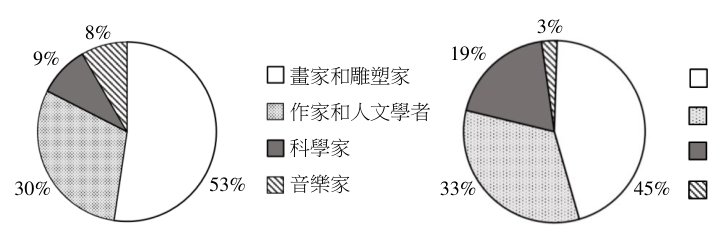
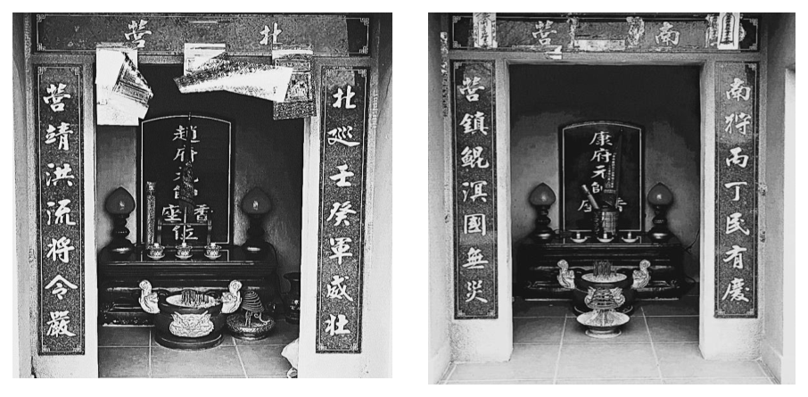
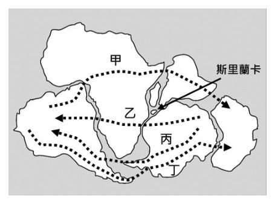
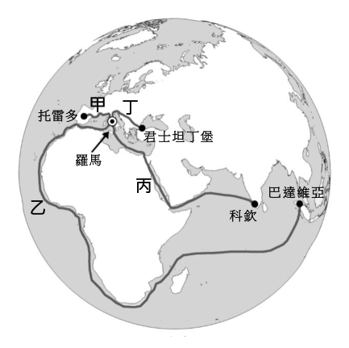
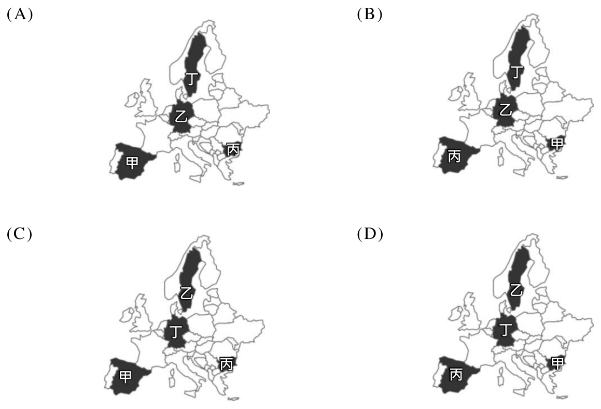
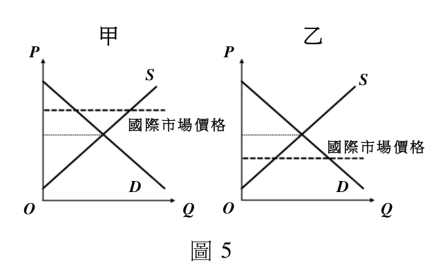
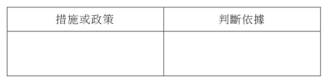
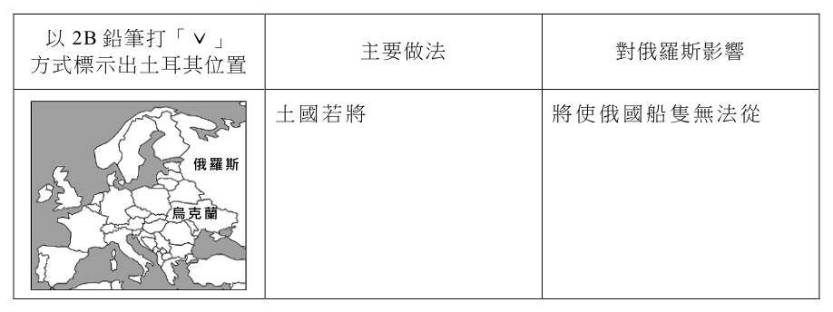
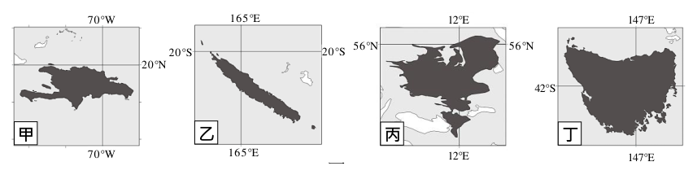
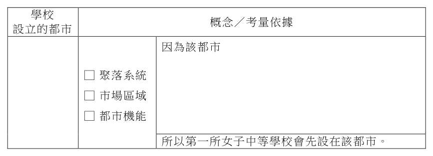

開卷有益 ／
學科能力測驗 ／ 社會 ／ 113 年113 年學科能力測驗社會試題與答案
這一頁是民國 113 年學科能力測驗社會的整份歷屆試題，共 64 題，題目與標準答案出自大考中心 學測歷年試題（依著作權法 §9，考試試題不受著作權保護），其中 64 題附有詳解。以下逐題列出題幹、選項與答案；要計時作答或記錄成績，請用線上練習。
線上作答這一科 →
全部 64 題
第 1 題
我國「紀念日及節日實施辦法」規定，臺灣原住民族各族的歲時祭儀日期，依原住民族委員會的公告，定為法定民俗節日，各該族原住民應予放假。從公民權利與社群資源分配的角度思考，該立法用意與下列何者最為相近？
（A） 民法規定父母應以書面約定子女要從父姓或母姓（B） 國家語言發展法將臺灣手語納入國家語言的範圍（C） 國籍法解除限制新住民歸化未滿十年不得參選公職之規定（D） 廣播電視法規定無我國國籍者不得為股東或擔任董監事職務答案：（B）
詳解與考點 正解：原住民族各族歲時祭儀放假，是讓少數族群得依自身文化曆法生活，核心在承認並保障其文化身分與文化近用。B 將臺灣手語納入國家語言範圍，同樣以法律承認少數群體的語言身分，立法邏輯最相近，故 B 為正解。
A：父母以書面約定子女從父姓或母姓，重點是家庭成員的民事自治與身分登記，不是保障特定少數群體的文化身分，A 錯誤。
C：解除新住民歸化未滿十年不得參選公職的限制，重點是參政權與政治平等，不是文化身分承認，C 錯誤。它看起來對，是因為同樣涉及少數或新住民群體的權益，但權利類型不同。
D：限制無我國國籍者擔任廣電股東或董監事，重點是媒體管制與國家安全考量，並非文化近用或少數文化保障，D 錯誤。
本題考點：多元文化與少數群體權利——辨識政策目的時，保障族群依文化傳統生活或使用其語言，屬文化身分承認與文化近用；權利類型判準——文化承認應與民事自治、參政平等、產業管制分別判讀。
第 2 題
某甲未婚無子女，僅有一兄長，父母過世後，仍繼續與兄嫂及姪兒姪女共 5 人同住。其兄過世後，甲善待嫂嫂，視姪兒姪女如己出，長年承擔其生活費用。如甲亦不幸身故，且生前未留遺囑，依我國民法規定，下列何者會是甲之遺產的繼承情形？
（A） 無法定繼承人且無遺囑故遺產歸國有（B） 由其血親卑親屬姪兒與姪女共同繼承（C） 因其兄已逝故由姪兒與姪女代位繼承（D） 其嫂及姪兒姪女應繼分各為三分之一答案：（A）
詳解與考點 正解：題幹的關鍵條件是甲「未婚無子女」、父母與唯一兄長都已過世，且未留遺囑；須依民法法定繼承順位逐層排除。A：法定繼承人依序為直系血親卑親屬、父母、兄弟姊妹、祖父母；甲沒有子女，父母與兄長均已死亡，嫂嫂與姪兒姪女皆非其法定繼承人，無遺囑時遺產歸國有，故 A 為正解。
B：姪兒姪女是甲的旁系血親，並非甲的直系血親卑親屬，不能依第一順位繼承，B 錯誤。
C：代位繼承是被繼承人的子女先於被繼承人死亡或喪失繼承權時，由其直系血親卑親屬代位；兄長死亡不使其子女代位繼承甲的遺產，C 錯誤。它看起來對，是因為姪兒姪女會代替已故父母承受遺產，但此處死亡的是甲的兄長，不是姪兒姪女的被繼承人。
D：嫂嫂與甲無血親關係，姪兒姪女也無繼承權，因此三人沒有應繼分可分，D 錯誤。
本題考點：法定繼承順位——先依直系血親卑親屬、父母、兄弟姊妹、祖父母逐一檢查有無在世者；代位繼承判準——僅在被繼承人的子女先於被繼承人死亡或喪失繼承權時適用；無繼承人且無遺囑時，遺產歸國有。
第 3 題
小宜在書上讀到一段資料：「十七世紀以後，咖啡風行歐洲，帶動咖啡消費風氣，使之成為大眾化飲料，歐洲各國其後也開始在殖民地大量種植咖啡。」依據此段歷史敘述，小宜推斷當時的咖啡市場價格應該會下跌。依市場分析，其推論之依據應為下列何者？
（A） 咖啡已經成為大眾化飲品，消費市場便容易發生短缺（B） 咖啡消費需求增加，但殖民地大量種植供給增加更大（C） 歐洲各國在殖民地種植咖啡後，同步刺激了消費成長（D） 政府預期咖啡價格將有大波動，採取了價格管制政策答案：（B）
詳解與考點 正解：題幹以「消費風氣」指出咖啡需求增加，以「殖民地大量種植」指出供給增加；若市場價格下跌，關鍵判準是供給增加的幅度大於需求增加的幅度。B：咖啡消費需求增加，但殖民地大量種植使供給增加更多，均衡價格會下跌，故 B 為正解。
A：短缺表示需求相對供給過大，會形成上漲壓力，與題幹推論的跌價相反，A 錯誤。
C：消費成長只說明需求增加，不能單獨解釋價格下跌；它看起來對，是因為題文確實提到咖啡大眾化，但需求增加本身通常推升價格，仍須比較供給變動，C 錯誤。
D：題文沒有政府實施價格管制的資訊，不可自行增添條件來說明價格，D 錯誤。
本題考點：市場供需——需求增加使價格有上漲壓力，供給增加使價格有下跌壓力；均衡價格判準——兩者同時增加時，供給增幅大於需求增幅才可推論價格下跌。
第 4 題
十七世紀荷蘭人來臺後，西班牙官員的報告提到：「荷蘭與日本帶給我們極大的損失，如去年荷蘭人擄獲一艘我國船隻，船上載著大量銀兩。……我建議在臺灣的另一個港口取得據點，便可將荷蘭人逐出他們的現居地。如果國王能在那裡建一商館，將使我們的根據地回復舊時榮光。」報告中「另一個港口」和「根據地」分別是指：
（A） 打狗、澳門（B） 基隆、馬尼拉（C） 安平、麻六甲（D） 淡水、巴達維亞答案：（B）
詳解與考點 正解：題幹提到荷蘭已在臺灣現居地，西班牙官員建議在「另一個港口」設據點牽制荷蘭；須對照17世紀荷、西在東亞的據點。B：荷蘭占據臺南安平（大員）後，西班牙在北臺灣基隆（雞籠）建立據點，而其菲律賓根據地為馬尼拉，故「另一個港口」是基隆、「根據地」是馬尼拉，B 為正解。
A：打狗不是西班牙用以牽制荷蘭的北臺灣據點，澳門也非西班牙在菲律賓的根據地，A 錯誤。
C：安平是荷蘭在臺灣的主要據點，並非報告所稱可另設商館的港口；西班牙的根據地亦非麻六甲，C 錯誤。
D：淡水雖在北臺灣，但西班牙在題幹情境中的主要港口據點為基隆；巴達維亞是荷蘭東印度公司的中心，不是西班牙根據地，D 錯誤。
本題考點：17世紀臺灣荷西競爭——辨識殖民勢力時，先以臺灣據點與東亞基地配對：荷蘭據安平（大員），西班牙據基隆（雞籠）並以馬尼拉為根據地；選項只要港口或勢力歸屬有一項不符，即不可選。
第 5 題
在歷史課程中，某生找到一份有關南宋繁華城市的資料：城中的民家緊鄰壕溝，甚至跨溝造屋而居，人們多將垃圾、穢物等丟棄溝中，不僅處處汙穢潮濕，偏街窄巷的氣味更讓人掩鼻難耐。根據上述資料分析，下列哪個推論最合理？
（A） 政府忙於抗金，無力管理居民（B） 瘴癘盛行，導致城市惡臭潮濕（C） 坊市瓦解，無力維修城郭街道（D） 城市人口密集，公共衛生欠佳答案：（D）
詳解與考點 正解：資料寫民家緊鄰壕溝、跨溝造屋，居民又將垃圾與穢物丟入溝中，造成汙穢、潮濕與惡臭；關鍵是居住密集與廢棄物處理不佳。D 的城市人口密集、公共衛生欠佳，最能由資料合理推論，故 D 為正解。
A：政府忙於抗金未見於資料，也不能直接解釋民居跨溝與垃圾棄置。
B：瘴癘不是資料所描述惡臭潮濕的原因；資料明示原因是居民丟棄垃圾與穢物。
C：坊市瓦解指商業空間與交易限制的改變，與城郭街道維修及衛生問題沒有直接因果。
本題考點：史料推論——先把材料明示的居住型態與棄置行為轉為社會現象；推論須能直接解釋材料，不能補入材料未提供的戰事或自然病因。
第 6 題
美國前國防部長檢討越戰失利，指出：「美國錯以為當地人會為自由民主而戰，我們以為好的，對越南人而言，未必一定是好的，這反映我們對當地歷史、文化、政治的無知。我們又不肯承認現代軍事科技在面對北越陣營士氣高昂時，仍有力不從心之處。」他認為美國的錯誤最主要是：
（A） 美國出兵越南不符合國家利益（B） 美國軍事科技的能力有侷限性（C） 越南因信奉共產主義而反民主（D） 忽略越南人民的民族獨立意志答案：（D）
詳解與考點 正解：引文強調美國無知於越南的歷史、文化與政治，誤以為當地人會為美式自由民主而戰；核心是忽略越南人的民族自主訴求。D：忽略越南人民的民族獨立意志，最能概括引文所批評的錯誤，故為正解。
A：國家利益不是引文檢討的重點。
B：軍事科技能力有侷限只是引文的次要說明，不能取代對當地人民意志的誤判。
C：題文未主張越南因信奉共產主義而反民主。它看起來對，是因為引文提到北越陣營，但焦點實為民族獨立意志。
本題考點：史料主旨判讀——先區分引文的核心原因與輔助說明；越戰脈絡——理解民族獨立意志，不能簡化為軍事技術或意識形態問題。
第 7 題
某生進行探究學習時，根據明代《寧波府志》的資料，整理出 1522 至 1542 年間鄞縣等地的人口資料（表 1）。比對史書記載，發現此時期該地區並無大的天災或戰亂，按理戶數和人口數應會增加，但實則不然。針對上述現象，以下哪個解釋最合理？
表1 縣 嘉靖 1 年（1522）戶數 嘉靖 1 年（1522）人口數 嘉靖 11 年（1532）戶數 嘉靖 11 年（1532）人口數 嘉靖 21 年（1542）戶數 嘉靖 21 年（1542）人口數 鄞縣 58,345 193,380 58,350 193,385 58,355 193,395 慈溪 21,000 37,525 19,300 32,501 18,732 27,455 定海 12,517 37,450 13,026 38,808 14,017 38,701 象山 3,802 17,812 3,802 17,812 3,802 17,812
（A） 明代簡化賦役為按土地人丁徵銀，官員不再精算戶、口數（B） 當地官員為維持轄下治安，強制將新增加的人口遷移他處（C） 當地鄰近海口，大量人民搭乘海船前往遼東地區開墾荒地（D） 明代實施海禁，當地由於海盜猖獗，政府乃限制移民進入答案：（A）
詳解與考點 正解：表中戶數、人口數長期近乎不動，而史書又無重大天災或戰亂，關鍵不在真實人口停止增加，而在官方統計的誘因。A：明代簡化賦役、按土地與人丁徵銀後，戶、口不再是主要課稅依據，官員便無誘因精確清查戶口，最能解釋數字停滯，故 A 為正解。
B：強制遷移新增人口既無題幹史料依據，也難以長期造成戶口數近乎不動。
C：大量居民渡海赴遼東開墾缺乏史料依據，且不能合理說明戶、口資料的統計性停滯。
D：海禁與海盜問題即使存在，重點仍非官員不精算戶、口數；它看起來對，是因為鄞縣鄰近海口，但未觸及賦役制度改變統計誘因。
本題考點：明代賦役制度——一條鞭法後戶、口資料的重要性下降；史料判讀——人口統計異常而無災亂時，須考慮登記制度與行政誘因，而非直接推論真實人口未變。
第 8 題
學者分析歐洲某一時期某地 600 名社會菁英的職業類別及其家庭背景，如圖 1、圖 2 所示。這種情況最可能出現於下列何時、何地？

（A） 西元前一世紀，亞歷山卓（B） 西元十一世紀，拜占庭（C） 西元十五世紀，義大利（D） 西元十九世紀，日耳曼答案：（C）
詳解與考點 正解：圖示中的社會菁英以畫家、雕塑家、作家與人文學者為主，且多出身工匠、店主、商人等市民家庭；關鍵是藝術人文興盛與市民階層流動。C：西元十五世紀義大利的文藝復興重視人文與藝術，城市商業發展也使市民階層成為重要力量，最符合圖示，故 C 為正解。
A：西元前一世紀亞歷山卓雖為希臘化文化中心，但不符合圖中以文藝復興藝術人文菁英及市民家庭為主的結構，A 錯誤。
B：西元十一世紀拜占庭以皇權、官僚與東正教傳統為重要特徵，與圖示的市民藝術人文菁英結構不符，B 錯誤。
D：西元十九世紀日耳曼的社會菁英與民族國家、工業化及專業官僚發展關聯較深，非此圖所示的文藝復興市民文化，D 錯誤。它看起來對，是因為十九世紀也有藝術家與專業人士，但題目同時要求人文學者興盛與工匠、商人家庭背景的組合。
本題考點：文藝復興與市民社會——藝術家、人文學者受到重視，且菁英出身商人、店主與工匠家庭，可判為十五世紀義大利；時空判讀須同時比對文化特徵與社會階層結構。
第 9 題
為開發山林資源，日治前期延續清代臺灣山區的隘防政策，以防堵原住民。根據表 2 呈現的官隘與民隘人數變化，可說明日治前期隘防政策的哪種發展趨勢？
表2（隘勇人數） 時間 隘勇人數 官隘 民隘 合計 1895 -- 568 568 1897 159 437 596 1903 3,054 0 3,054
（A） 官方僱用平埔族人防禦（B） 山區防禦漸由官方主導（C） 從武力鎮壓到安撫教化（D） 山區居民漸被官方撤離答案：（B）
詳解與考點 正解：表中民隘人數由 568 降至 437 再至 0，官隘則由 0 增至 159、3,054；防禦人力明顯由民間隘勇轉為官隘，故 B 為正解。
A：表格沒有隘勇族群身分資料，無法推論官方僱用平埔族人，A 錯誤。
C：表格只呈現官、民隘人數，沒有武力鎮壓或安撫教化的措施資料，C 錯誤。
D：表格未呈現山區居民是否撤離，D 錯誤。
本題考點：表格資料判讀——比較同一指標隨時間的增減，民隘歸零且官隘大增可判斷山區防禦漸由官方主導；史料證據界限——表中未提供的族群、政策內容或居民動向不可逕行推論。
第 10 題
1960 年美國總統候選人尼克森表示：中國共產黨聲明，攻擊沿海小島只是拿下臺灣的前奏。一旦中共發動對臺灣的攻擊，美國將站在盟友這邊，如同對歐洲某個城市的支持一樣。他說的沿海小島和歐洲城市分別指：
（A） 金門、柏林（B） 大陳、倫敦（C） 澎湖、巴黎（D） 馬祖、華沙答案：（A）
詳解與考點 正解：題幹的「沿海小島」與「歐洲城市」置於 1960 年冷戰及臺海危機脈絡，應分別對應金門與西柏林。A：1958 年八二三砲戰的焦點為金門；柏林是美蘇冷戰對峙的前線象徵，故 A 為正解。
B：大陳在 1955 年已撤守，且倫敦不是美蘇對峙的前線城市，錯誤。
C：澎湖並非此一危機所指的沿海小島，巴黎也非題意所指的冷戰前線城市，錯誤。
D：馬祖雖為外島，但華沙不是尼克森此處類比的歐洲城市，錯誤。
本題考點：冷戰與臺海危機——辨識 1958 年金門砲戰及美國對中華民國的支持；時空對照判準——冷戰中的歐洲前線象徵為西柏林，而非一般歐洲首都。
第 11 題
某本歷史教科書在最後一節「未來的世界」中有如下結論：「國民黨領導的國民革命是世界革命的準繩，三民主義將取代帝國主義和社會主義，成為領導人類建立大同世界的普遍理念，中國對於這一目標的實現負有不可推卸的責任。」這最可能是何時、何地的教科書？
（A） 1910年代初的北京（B） 1930年代初的上海（C） 1960年代末的南京（D） 1990年代末的香港答案：（B）
詳解與考點 正解：教科書稱國民黨領導的國民革命為世界革命準繩，並主張三民主義取代帝國主義與社會主義；這是國民黨在中國大陸統治時期的民族主義論述。B：1930 年代初的上海仍在中華民國版圖內，且出版業發達，最符合時地，故 B 為正解。
A：1910 年代初國民黨尚未主導中國政治，難以由官方或主流教科書作此論述。
C：1960 年代末南京不在國民黨統治下，與題文政治語境不符。
D：1990 年代末香港已非國民黨統治地區，且此種宣示不合當時脈絡。
本題考點：教科書史料判讀——先以政治理念辨識政權立場，再以政權統治範圍與年代篩選地點；三民主義作為世界普遍理念的論述，對應 1920 至 1930 年代國民黨在大陸統治的脈絡。
第 12 題
日本某位天皇在位期間，曾將國有土地分授給人民，並規定不得買賣，死後必須歸還政府；同時，政府也向人民徵收穀物、布疋，以及要求貢納各鄉土的特產。上述措施，最可能受到中國哪個制度的影響？
（A） 三國戶調制（B） 西晉占田制（C） 唐代租庸調法（D） 明代一條鞭法答案：（C）
詳解與考點 正解：題幹的口分田、死後歸還，以及穀物、布疋、鄉土特產，合併指向唐代班田與租庸調制度。C：租徵穀物、庸與布疋相關、調徵地方特產；日本奈良時代仿唐推行班田收授法與租庸調制，故 C 為正解。
A：三國戶調制時代較早，且不符合題幹完整的班田收授與租庸調內容，錯誤。
B：西晉占田制雖涉及土地，但非題幹所述的租、庸、調徵收組合，錯誤。
D：明代一條鞭法以賦役折銀為特徵，與徵收穀物、布疋及特產不同，錯誤。
本題考點：日本律令制與唐制——日本的班田收授法與租庸調制受唐代制度影響；制度辨識判準——土地授受配合租穀、庸、調特產時，對應唐代租庸調法。
第 13 題
亞洲某處沿海寺廟的建廟碑文寫道：「……崇祀聖母神像，我唐人所共建也。自嘉慶二十三年（1818 年），英吏斯臨，新闢是地，……謂可為商賈聚集之區。……數年之間，遂成一大都會。我唐人由內地帆海而來，經商茲土，惟賴聖母慈航。」從碑文判斷，此寺廟最可能的地點是：
（A） 新加坡（B） 雅加達（C） 馬尼拉（D） 長崎答案：（A）
詳解與考點 正解：碑文的關鍵是「嘉慶二十三年（1818年）英吏斯臨，新闢是地」與其後成為商賈都會；應比對英國開埠的時間與地點。A：英國於1819年由萊佛士開埠新加坡，與1818年前後英人到來、開闢商業聚落的線索吻合；碑文所稱唐人渡海經商、崇祀聖母也符合海外華人社群，故A正確。
B：雅加達為荷蘭殖民統治的重要據點，不符合英吏開闢的線索，錯誤。
C：馬尼拉長期受西班牙殖民統治，不符合英國開埠，錯誤。
D：長崎位於日本，並非1818年前後由英國新闢的商賈都會，錯誤。
本題考點：海外華人史料判讀——將碑文的年代、殖民勢力與港口功能交叉比對；歷史定位判準——1819年前後英國開埠、迅速成為商業都會的地點為新加坡。
第 14 題
日本大阪西北方的「寶塚市」，為知名觀光旅遊勝地。遊客可在榮町的寶塚大劇場觀賞東西方歷史劇表演，在湯本町的寶塚溫泉泡湯，參訪市郊紫雲山以祈求安產、護佑嬰兒聞名的佛寺中山寺，參觀武庫川町的手塚治虫漫畫紀念館。上述哪個地方的景點，最能說明東亞文化圈的擴散現象？
（A） 榮町（B） 湯本町（C） 紫雲山（D） 武庫川町答案：（C）
詳解與考點 正解：題幹問「東亞文化圈的擴散」，應找由外來宗教傳播而形成的共同文化。C：紫雲山的中山寺為佛寺，佛教自印度經中國、朝鮮傳入日本，正可說明東亞文化圈中的宗教傳布。
A：寶塚大劇場演出東西方歷史劇，屬表演與觀光活動，不能直接說明傳統東亞文化圈的擴散。
B：寶塚溫泉是自然資源與觀光景點，並非文化擴散的例證。
D：手塚治虫漫畫紀念館呈現現代流行文化，與題幹所問的傳統東亞文化圈擴散不相符。
本題考點：文化擴散判讀——先辨認景點所代表的文化要素，再追溯其跨區域傳播路徑；東亞文化圈——佛教、儒學與漢字文化等由中國向周邊傳播，是判斷共同文化形成的重要線索。
第 15 題
北宋末年有詩云：「泉州人稠山谷瘠，雖欲就耕無地辟，州南有海浩無窮，每歲造舟通異域。」該詩最可能說明當時泉州具有下列哪種社經發展特色？
（A） 生產技術革新，促使沿岸漁業產量提升，居民財富得以增加（B） 土地贍養力低，人們多前往臺灣從事墾殖，在異鄉建立聚落（C） 產業升級快速，從事手工業以增加附加價值，提高人均收入（D） 人口壓力過重，居民透過對外貿易創造利潤，彌補家鄉生計答案：（D）
詳解與考點 正解：詩句「人稠山谷瘠，雖欲就耕無地辟」點出人口多而土地貧瘠、無地可耕，「每歲造舟通異域」則點出以海外貿易另謀生計。D：人口壓力過重，居民透過對外貿易創造利潤以彌補家鄉生計，完整對應詩意，故 D 為正解。
A：詩文雖寫到造舟，重點是通往異域貿易，沒有提及漁業技術或沿岸漁獲增加，A 錯誤。
B：詩中的「異域」未指明臺灣，不能據此推定居民多前往臺灣墊殖，B 錯誤。
C：詩文未提手工業或產業升級，而是明寫造舟通異域；貿易雖可帶來附加價值，卻不能以文本未載的手工業取代詩句的明確訊息，C 錯誤。
本題考點：宋代海外貿易史料判讀——「山谷瘠、無地辟」對應土地贍養力與人口壓力，「通異域」對應對外貿易；選項若加入詩中未出現的產業或特定地點，即不符文本證據。
第 16 題
在 COVID-19 疫情期間，社會上開始出現網購蔬菜箱的風潮。在地小農將自身生產的多樣蔬果放入蔬菜箱透過宅配到消費者手上，帶來更多的利潤。然而此情況卻可能阻礙下列哪種農業發展現象？
（A） 精緻農業（B） 產銷履歷（C） 智慧農業（D） 農業專業化答案：（D）
詳解與考點 正解：題幹的「多樣蔬果放入蔬菜箱」與小農自行宅配，表示生產及銷售未依單一品項和專業分工發展；農業專業化以單一作物的大規模生產與分工提升效率，故 D 為正解。
A：精緻農業著重品質、附加價值與多元經營，蔬菜箱可直接把在地農產品送達消費者，未必受阻，A 錯誤。
B：產銷履歷是生產與流通資訊的追溯制度，與是否採多樣蔬果箱沒有直接衝突，B 錯誤。
C：智慧農業指運用資訊與科技提升農業生產管理，題幹未排除技術運用，C 錯誤。
本題考點：農業專業化——以單一作物、大規模生產及專業分工提升效率；農業型態判讀——看到多樣生產者自行包裝直售時，先判斷其是否削弱單一品項與分工的發展。
第 17 題
某同學小論文探究臺灣某茶鄉的產業發展，採集到具有地方特色的閩南語「相褒歌」：「透早（清晨）出門上茶山，冷風吹來會畏寒（感到寒冷）。親像（好比）孤鳥揣（找）無伴，怎樣放我會孤單。」當地種茶事業的發達與年代「臺 1860 灣開港」有密切關係，1860 至 1960 年代也是「相褒歌」最流行的期間。該小論文研究區域最可能位於下列何地？
（A） 新北市石碇區烏塗窟（B） 新竹縣北埔鄉六份壢（C） 南投縣竹山鎮杉林溪（D） 嘉義縣阿里山鄉樂野答案：（A）
詳解與考點 正解：題幹的關鍵是 1860 年開港帶動茶葉外銷，以及北部茶山勞工民謠「相褒歌」。A：新北市石碇區烏塗窟是文山包種茶重要產地，符合淡水開港後北部茶業發展與相褒歌流行的條件，故 A 為正解。
B：新竹北埔雖有茶業，非題幹所指淡水開港後的北部茶業外銷核心產區，B 錯誤。
C：南投竹山不屬北部開港茶業發展的核心區域，C 錯誤。
D：嘉義阿里山亦非題幹所指的北部茶山背景，D 錯誤。
本題考點：臺灣產業地理——將開港年代、外銷路徑與特色民謠交叉比對；茶業史判讀——淡水開港後的北部茶區可連結文山包種茶產地。
第 18 題
臺灣部分村落常在四周外緣設置東、西、南、北、中等五營的小廟，以彰顯守護的村落範圍，並象徵能避開災禍侵擾。照片 1 為某村落五營中的兩座小廟，其對聯呈現該村落常面臨的自然災害；若自然災害與自然環境有關，而地名可顯示當地自然環境特徵，這兩座小廟最可能位於下列哪組地名所在村落的外緣？

（A） 大潭、後塭仔（B） 崁頂、馬頭山（C） 東澳、烏石鼻（D） 大坪頂、松柏崙答案：（A）
詳解與考點 正解：題幹要求由自然災害與地名所呈現的環境特徵交叉判斷。A 的「潭」可指積水低地，「塭」常指濱海魚塭，兩個地名都較能指向低窪、近水且易受水患影響的環境，故 A 為正解。
B：崁頂、馬頭山偏向高地或山地地形，不合低窪近水的環境特徵，B 錯誤。
C：東澳、烏石鼻偏向海岸岬角或岩岸地形，不以低窪積水環境為主要特徵，C 錯誤。
D：大坪頂、松柏崙多帶有高地、坡地意涵，與低窪近水的環境特徵不合，D 錯誤。
本題考點：地名判讀——先從「潭、塭」辨認低窪積水或濱海養殖環境，再用其可能面臨的水患切面比對各組地名。
第 19 題
研究指出，某自然景觀帶廣布泥炭地的重要原因之一，是該景觀帶具有終年潮濕積水的環境；而該景觀帶若進行大規模開採礦物、石油，或持續焚林種植油棕樹等作物時，將可能導致泥炭地乾涸，甚至消失，促使泥炭繼續分解，釋放大量二氧化碳至大氣中。為防患未然，研究者對位於該景觀帶的國家進行分析，最可能歸納出這些國家大多具有下列哪項社會經濟發展特色？
（A） 居民組成以穆斯林為主，但受歐美干涉內政影響，國內宗教衝突頻仍（B） 政府以都市工作為誘因，吸引鄉村貧民移入，間接促使世界都市成形（C） 多採出口擴張經濟策略，但易受國際市場競爭影響，貿易額起伏量大（D） 受殖民地式經濟結構影響，國內生產毛額雖高，但國民所得往往偏低答案：（D）
詳解與考點 正解：題幹的終年潮濕積水、泥炭地，以及開採礦物、石油與焚林種植油棕，指向赤道雨林景觀帶；其所在國家多受殖民地式經濟結構影響，依賴初級產品出口。D：石油、礦物與油棕等初級商品的利潤常由跨國企業或外資取得，可能形成國內生產毛額高、國民所得偏低的情形，故 D 為正解。
A：穆斯林人口與歐美干涉造成宗教衝突，不能概括東南亞、剛果盆地與亞馬遜等赤道雨林國家，更不是泥炭地開發所反映的共同經濟特色。
B：以都市工作吸引鄉村貧民、促成世界都市，是都市化議題，與以礦物、石油、油棕為主的資源出口結構無直接對應。
C：出口擴張策略與國際市場競爭雖可能出現於許多國家，但題幹所指的是殖民地遺留的初級產品依賴及所得分配問題；C 未能說明國民所得偏低的結構性原因。它看起來對，是因為油棕、石油與礦物確實供出口，但題目問的是這些國家共同的社會經濟發展特色，須進一步辨認殖民地式經濟結構。
本題考點：赤道雨林景觀帶——終年高溫多雨、易形成泥炭地，常見石油、礦產與油棕開發；殖民地式經濟結構——依賴初級產品出口且利潤外流時，可能出現 GDP 較高而國民所得偏低的現象。
第 20 題
地球上有袋類動物起源於北美洲，目前主要分布在澳洲，另外南美洲亦有少數分布，其棲地廣闊。關於澳洲有袋類物種遷移路線之一，學界有不同觀點，有的主張：早期地球有兩塊大陸，其中之一為岡瓦納大陸，有袋類在該大陸內部遷移，等到該大陸分裂成現今的數個大洲後，由於澳洲地理位置的特性，才使它成為絕大多數有袋類分布區。至於在亞洲、非洲發現的有袋類化石，則與歐洲的物種關係較為密切，與澳洲有袋類化石關係較遠。圖 3 為岡瓦納大陸復原圖，圖中哪條物種遷移路線，最符合上述學界的觀點？

（A） 甲（B） 乙（C） 丙（D） 丁答案：（D）
詳解與考點 正解：題幹強調有袋類在岡瓦納大陸內部遷移，且亞洲、非洲化石與歐洲關係較近、與澳洲較遠；因此應在圖3中尋找沿南方陸塊、經南極連至澳洲的路線。依原圖，此路線標示為丁，即 D，故 D 為正解。
A、B：甲、乙未呈現由南極連至澳洲的遷移路徑，A、B 錯誤。
C：丙雖朝澳洲方向延伸，但未同時符合經南極連至澳洲的條件，C 錯誤。它看起來對，是因為終點方向接近澳洲，但本題還須核對路線經過的陸塊。
本題考點：大陸漂移與物種遷移——先把題幹的親緣遠近轉為路線限制，再在岡瓦納復原圖上選出可由南極連至澳洲的路徑；圖像判讀——方向相近不足以判對，須同時核對起點、經過陸塊與終點。
曾有大學校長表示：從事高等科學研究的科學家中，男性比女性有更高的占比，這是因為在數理能力上，男性比女性有先天優勢，其成就也較大。此論點引發強烈抗議，反對者認為該校長忽略了女性要成為科學家，或女性科學家要持續發展學術生涯時，常面對難以打破的文化刻板印象，以及社會規範的阻礙。請問：
第 21 題
該校長認為男生比女生有優勢的觀點，若純粹以經濟學觀點來理解，最接近下列哪個概念的意涵？
（A） 人力資本（B） 比較利益（C） 市場機能（D） 絕對利益答案：（D）
詳解與考點 正解：題幹將男性描述為在同一數理能力工作上具有先天優勢、成就較大，關鍵是絕對生產力較高。D 的絕對利益正指一方在某項生產上效率或產出較高，故為正解。
A：人力資本是教育、訓練與健康等後天投資所累積的能力，與題幹強調的「先天」不同。
B：比較利益比較的是機會成本的相對高低，即使一方各項能力都較高，也未必在每項活動都具有比較利益。
C：市場機能指價格機制調節資源配置，與個人能力優勢無關。
本題考點：經濟學基本概念——絕對利益看同一活動的生產力或產出高低；比較利益看機會成本；人力資本則是後天投資形成的能力。
第 22 題
假定下列各敘述在現實世界中都成立，如果要指出該校長上述觀點有誤，下列何者可構成反駁校長的充分理由？
（A） 一般人對於男性與女性科學家的尊敬與信任程度，並沒有差異（B） 中學老師在評量學生的數理成績時，會出現高估男學生的偏誤（C） 男女學生在各個學習階段的數理能力表現相當，幾乎沒有差異（D） 很多女性科學家表示，在學生階段曾受到女性數理老師的啟蒙答案：（C）
詳解與考點 正解：要反駁校長「男性數理先天較強」的觀點，理由必須直接否定男女先天能力存在差異。C：男女學生在各學習階段的數理能力表現相當，幾乎沒有差異，直接拆解其能力差異前提，足以構成充分反駁，故 C 為正解。
A：社會對男女科學家的尊敬與信任相同，不能證明兩性先天數理能力相同，A 錯誤。
B：教師高估男學生的評量偏誤，說明成績可能受後天評量影響，但未直接否定先天能力差異，B 錯誤。
D：女性科學家曾受女性數理老師啟蒙，說明角色典範可能有影響，仍不能充分否證先天差異，D 錯誤。
本題考點：論證反駁——要充分反駁「X 天生較強」，須提出直接否定天生能力差異的證據；外部評價、社會態度或啟蒙經驗只能提供相關線索，不能單獨推翻該前提。
在 COVID-19 疫情嚴峻時期，中央流行疫情指揮中心經常召開記者會，報告疫情數據，說明防疫政策與醫療資源概況等。期間有數項防疫措施如下：一、依規定，應居家隔離的民眾若違規外出被查獲，將處以最高 100 萬罰鍰。二、為確保醫療量能，政府發布實施如限制醫事人員出國等各種緊急規定與禁令。三、立法院快速通過並由總統公布《嚴重特殊傳染性肺炎防治及紓困振興特別條例》，授權中央流行疫情指揮中心指揮官，為防治疫情需要，得實施必要之應變措施，並溯及在此條例通過前所發布的一些命令，以解決法律爭議。四、因應疫情警戒升級，各級學校停止到校上課，改採線上教學。請問：
第 23 題
如就「民主課責」而言，政府相關首長經常舉行記者會向各界說明疫情，和下列哪項政府定期措施的性質最相近？
（A） 公布治安狀況，並提出主管機關的因應措施（B） 發布死刑存廢的民意調查數據，供人民參考（C） 公告食品衛生標準，定期邀請學者討論修正（D） 提供健康飲食生活標準，要求各界廣為宣導答案：（A）
詳解與考點 正解：題幹關鍵是「民主課責」下，政府首長經常開記者會，公開說明疫情數據、防疫政策與醫療資源，讓人民理解並監督施政。A：公布治安狀況並提出主管機關的因應措施，同樣是政府主動揭露施政現況與作為，性質最相近，故 A 為正解。
B：發布死刑存廢的民意調查數據，重點是呈現民眾意見，未必是政府對其施政的說明與接受監督，B 錯誤。
C：公告食品衛生標準並邀請學者討論修正，重點是標準訂定與專業諮詢，不是向人民報告施政成效並回應監督，C 錯誤。
D：提供健康飲食生活標準並要求宣導，重點是政策宣導，沒有公開說明政府執行情形與因應措施，D 錯誤。
本題考點：民主課責——政府應向人民公開說明施政內容、執行現況與因應作為，並接受監督；辨識判準——若措施核心是揭露政府作為並提供檢視，屬課責，若只是蒐集意見、訂標準或宣導，則不屬同類。
第 24 題
立法院迅速通過題文中的特別條例，其為解決之法律爭議與某個法律原則相關。請問該原則與下列哪一敘述中蘊含的法律原則最相近？
（A） 有論者認為，不禮讓行人者應一律以最高額度罰鍰處罰（B） 大法官釋憲後確定相同性別二人可至戶政機關辦理結婚登記（C） 政府原有補助人民投保防疫險，後以財政困難為理由突然停止補助（D） 學者表示，土地登記規則對人民財產有巨大影響，應從命令升格為法律答案：（D）
詳解與考點 正解：特別條例用法律追認指揮中心先前命令的授權依據，關鍵是「無法律授權即發布命令」；重要且影響人民權利的事項應由法律規定，屬法律保留原則。D 主張對財產權影響重大的土地登記規則應由命令升格為法律，最相近，故選 D。
A：一律處最高罰鍰涉及處罰是否過當，較接近比例原則。
B：相同性別二人得辦理結婚登記，著重平等權保障，屬平等原則。
C：政府突然停止既有補助，涉及人民對既有措施的合理信賴，屬信賴保護原則。
本題考點：法律保留原則——重大公共事務或基本權限制須有法律依據；辨析時先問爭點是「有無法律授權」，若是處罰輕重、平等對待或政策變動，分別轉向比例、平等或信賴保護。
第 25 題
「對居家隔離民眾違規外出處以重罰」這項措施，請判斷下列何者最可能衍生對國內生產毛額之影響？
（A） 部分被隔離民眾擅自出門，購買路邊小吃攤的食物來解饞（B） 政府將民眾違反防疫措施所繳交之罰鍰，轉用於紓困補貼（C） 居家隔離民眾為恢復健康，透過外送平台訂購營養補給品（D） 為排遣時間，被隔離的民眾熱衷於報名國外大學線上課程答案：（C）
詳解與考點 正解：題幹問居家隔離措施最可能衍生的國內生產毛額影響，關鍵是是否產生境內的當期附加價值。C：透過外送平台訂購營養補給品，最可能帶來國內外送服務及相關零售活動的境內附加價值，因而計入 GDP；若補給品為進口，商品進口價額須在支出法中扣除，不能把整筆訂購金額都視為本國新增產值，故仍以 C 最符合題意。
A：違規外出購買路邊小吃雖有消費行為，但不是「對違規外出處以重罰」後最可能衍生的守法隔離行為，A 錯誤。
B：民眾繳交的罰鍰與政府發放的紓困補貼皆為移轉性收支，沒有直接對應新增生產，不能直接計入 GDP。它看起來對，是因為政府確有金錢收支，但 GDP 計算的是境內生產的附加價值，不是款項移轉。
D：報名國外大學的線上課程屬進口服務，不增加本國 GDP，D 錯誤。
本題考點：GDP 計算範圍——計入的是境內當期生產的最終商品、服務與附加價值；移轉性收支判準——罰鍰、補貼等僅移轉所得，不直接代表新增產值；進口判準——進口商品或服務不構成本國生產，支出法須扣除進口。
第 26 題
學校採線上教學期間，有學者認為此舉將對偏鄉學生的學習品質造成負面影響。該學者持此論點的依據最可能為下列何者？
（A） 科技發展經常導致社會變遷（B） 科技創新加速時空收斂現象（C） 科技產品的生命週期很短促（D） 科技事物的近用上有所落差答案：（D）
詳解與考點 正解：題幹的關鍵是偏鄉學生改採線上教學後，學習品質可能受損；須從取得電腦、網路等資源的差異判斷。D：城鄉在科技設備與網路的近用能力有所落差，即數位落差，偏鄉學生因而可能較難參與線上學習，故 D 為正解。
A：科技發展會導致社會變遷的說法過於概括，未指出偏鄉學生為何較不利，A 錯誤。
B：時空收斂是科技縮短時空距離的現象，不能解釋部分學生無法近用設備或網路，B 錯誤。
C：科技產品生命週期短促談的是產品更新速度，與學生能否取得線上學習資源無直接關係，C 錯誤。
本題考點：數位落差——分析科技政策的影響時，先看不同群體能否近用設備、網路與數位能力；若資源取得不均使偏鄉學生受損，即以科技近用落差解釋。
第 27 題
將胡椒放置在銀製容器中，最可能的原因是：

（A） 胡椒接觸銀器後會產生化學作用，可以增加香料風味（B） 胡椒和銀器都是高價格的物品，人們常用來彰顯身分（C） 胡椒可防止食物腐敗，放入貴重容器代表重視其寓意（D） 歐洲盛產白銀，人們常用來製作存放各種物品的器皿答案：（B）
詳解與考點 正解：題幹把胡椒放入銀製容器，關鍵在兩者皆屬高價物。胡椒是羅馬時代遠道而來的昂貴香料，銀器亦為貴重器物，二者並置可彰顯主人身分地位，B 正確。
A：胡椒接觸銀器會增加風味的化學作用並無依據，A 錯誤。
C：胡椒雖可作調味或保存用途，但放在銀器的主要意義是奢侈品的社會象徵，不是重視防腐寓意，C 錯誤。
D：即使銀器可作為盛裝物品的器皿，此說仍未解釋為何要將昂貴的胡椒置於銀製容器中；題幹情境較支持兩種高價物品用以彰顯身分，D 錯誤。
本題考點：物質文化——物品除實用價值外，也可作為身分與地位的象徵；歷史情境判讀——兩種稀有高價物並置時，優先檢驗其炫耀性消費功能。
第 28 題
圖 4 中，若以羅馬城為中心，羅馬帝國至胡椒產地的主要貿易路線最可能是：
（A） 甲（B） 乙（C） 丙（D） 丁答案：（C）
詳解與考點 正解：題幹的胡椒產地指印度馬拉巴海岸的科欽；由羅馬前往印度的主要古代貿易路線應經紅海與阿拉伯海。C：丙線由羅馬向東南經紅海、阿拉伯海到科欽，符合胡椒貿易路線，故 C 為正解。
A：甲線通往托雷多一帶的西班牙方向，非印度胡椒產地。
B：乙線沿非洲西岸南下，未通往印度馬拉巴海岸。
D：丁線經君士坦丁堡至巴達維亞（爪哇），目的地不符本題所指科欽。
本題考點：古代歐亞貿易——羅馬取得印度胡椒的重要路徑為地中海、紅海與阿拉伯海的海上聯繫；地圖判讀——先定位產地科欽，再比對路線是否可由羅馬連至印度西岸。
27-28為題組大英博物館收藏一件銀製的胡椒罐（照片2），屬於四世紀某個富有的羅馬家庭所有。這個罐子的高度約10公分，外觀像是一位羅馬主婦的半身雕像，設計精巧。圖4是四條貿易路線示意圖。請問：27.將胡椒放置在銀製容器中，最可能的原因是：(A)胡椒接觸銀器後會產生化學作用，可以增加香料風味(B)胡椒和銀器都是高價格的物品，人們常用來彰顯身分(C)胡椒可防止食物腐敗，放入貴重容器代表重視其寓意(D)歐洲盛產白銀，人們常用來製作存放各種物品的器皿28.圖4中，若以羅馬城為中心，羅馬帝國至胡椒產地的主要貿易路線最可能是：(A)甲(B)乙(C)丙(D)丁29-30為題組某生分別從東歐、西歐、南歐、北歐各地區挑選一個國家，蒐集相關資料，進行某項主題的探究，表3是2022年這些國家的三項經濟發展資料。已知2022年歐盟平均每人國內生產毛額為37,150美元。請問：
第 29 題
表 3 的甲、乙、丙、丁四個國家，最可能分別位在下圖中的何處？

本題選項為上圖中的 A／B／C／D，請對照圖片作答。
答案：（B）
詳解與考點 正解：表 3 呈現甲、乙、丙、丁四國的 GDP 總量、人均所得與主要出口項目，需依這些數據特徵對應歐盟四大區域。乙 GDP 約 4 兆、以出口機械與航太產品為主，屬經濟規模最大的西歐；丁人均所得最高（約 5.6 萬）但整體規模較小，屬北歐；丙人均所得低於歐盟均值、出口以食品菸酒為主，屬南歐；甲的 GDP 規模與人均所得皆為四者最低、出口以礦物燃料為主，屬東歐。四國依序對應「甲東、乙西、丙南、丁北」，符合此排列的選項為 B，故選 B。
A：若排列未能反映乙的 GDP 規模最大（對應西歐）或丁的人均所得最高（對應北歐）等數據特徵，即與表 3 不符，錯誤。
C：若排列將甲、丙的相對位置對調，未能呈現甲的規模與人均皆最低（對應東歐）的特徵，錯誤。
D：若排列未能同時滿足乙為西歐、丁為北歐兩項數據特徵，即與表 3 記載不符，錯誤。
本題考點：歐盟區域經濟特徵判讀——西歐規模最大、北歐人均最高、南歐人均低於均值、東歐規模與人均皆最低；依 GDP 總量、人均所得、出口品項三項數據交叉比對，逐一鎖定對應區域。
第 30 題
根據表 3，該生從歐盟各區域成員國之間的經濟發展狀況，最可能進行下列哪項主題的探究？
表3 國家 國內生產毛額（10億美元） 平均每人國內生產毛額（美元） 主要出口項目 甲 89.0 13,772 電氣機械設備、礦物燃料、礦物油機械設備等 乙 4,072.2 48,432 機械和運輸設備、醫學和藥品相關、航太產品和電腦設備等 丙 1,397.5 29,350 機械和運輸設備、食品飲料和香菸、化學品等 丁 585.9 55,873 機械和運輸設備、化學品和相關產品等
（A） 歐盟製造業發展的困境（B） 歐盟向東擴散趨勢分析（C） 歐盟政策整合面臨的挑戰（D） 歐盟國家不平等交換現象答案：（C）
詳解與考點 正解：表 3 的關鍵是四個歐盟區域成員國人均 GDP 差距懸殊：甲為 13,772 美元，低於歐盟平均 37,150 美元；乙為 48,432 美元、丁為 55,873 美元，均高於平均；丙為 29,350 美元，亦低於平均。區域發展不均會使共同政策難以兼顧不同國家的利益，故 C 為正解。
A：表中雖列主要出口項目，但材料沒有呈現歐盟製造業的困境或衰退，A 錯誤。
B：歐盟向東擴散需有會員加入時間、範圍或空間擴張資料；表中主要比較經濟發展落差，B 錯誤。
D：不平等交換須比較國際貿易中中心與邊陲的交換條件；表中資料直接呈現的是成員國間的發展差異，不能據此判定不平等交換，D 錯誤。它看起來對，是因為人均 GDP 落差確實涉及不平等，但題幹問的是此落差對歐盟內部共同政策的影響。
本題考點：區域經濟發展差異——以人均 GDP 與區域平均值比較各地發展程度；區域整合挑戰——成員國發展程度差距大時，共同政策較難同時符合各方利益。
第 31 題
造成該河川上游降水的主要原因，最可能是下列何者？
表4 觀測站 河川水面距堤防 頂部的高差（m） 最高水位發生日期、時間 甲 9.8 09/22 01:20 乙 7.3 09/22 00:40 丙 7.4 09/21 23:20 丁 8.8 09/22 12:40 戊 16.3 09/21 23:50
（A） 颱風外圍環流影響（B） 北方強烈冷鋒過境（C） 熱力對流旺盛引起（D） 滯留鋒面停留盤旋答案：（A）
詳解與考點 正解：題幹關鍵是 9 月的臺灣河川上游出現突發強降雨；此時最常見能帶入大量暖濕水氣、造成廣泛大雨的系統是颱風外圍環流。A：颱風外圍環流可引進暖濕氣流，使山區上游降下大雨並造成河川水位快速上升，故 A 為正解。
B：北方強烈冷鋒較常在秋冬至春季影響臺灣，9 月突發上游豪雨的典型成因較不相符，B 錯誤。
C：熱力對流多為午後雷陣雨，範圍較小、持續時間較短，較難解釋上游集中大雨及河川暴漲，C 錯誤。
D：滯留鋒面長時間停留常見於春季梅雨期，與 9 月的季節條件不合，D 錯誤。它看起來對，是因為滯留鋒也會帶來持續降雨，但須先用月份與天氣系統的季節性排除。
本題考點：臺灣降雨系統——9 月的強降雨優先判斷颱風及其外圍環流；季節判準——梅雨期常見滯留鋒，午後短時降雨多屬熱力對流，須將降雨範圍與持續時間一併比對。
第 32 題
這五個觀測站依照上游至下游的排列順序，最可能為下列何者？
表 4 觀測站 河川水面距堤防頂部的高差（m） 最高水位發生日期、時間 甲 9.8 09/22 01:20 乙 7.3 09/22 00:40 丙 7.4 09/21 23:20 丁 8.8 09/22 12:40 戊 16.3 09/21 23:50
（A） 乙丙丁甲戊（B） 丙戊乙甲丁（C） 丁甲乙戊丙（D） 戊甲丁丙乙答案：（B）
詳解與考點 正解：洪峰會由上游向下游傳遞，關鍵是以各站最高水位發生時間由早到晚排序。B：表 4 的資料依序為丙 23:20、戊 23:50、乙 00:40、甲 01:20、丁 12:40，由早到晚正是上游至下游的丙戊乙甲丁，故 B 為正解。
A：乙排在丙之前，與丙的洪峰較早到達矛盾，A 錯誤。
C：丁的洪峰最晚，卻排在最上游，與傳遞時間判準相反，C 錯誤。
D：戊的洪峰晚於丙，卻排在丙之前，D 錯誤。
本題考點：河川洪峰傳遞——以表 4 各站最高水位的發生時間排序，時間愈早者愈上游、愈晚者愈下游；判讀位置不可改用水位高低，因水位還受河道斷面與堤防條件影響。
2022 年 2 月俄羅斯軍隊入侵烏克蘭。俄國總統普丁以本國的立場，主張烏克蘭原本就屬於俄國，因此他要拿回烏克蘭。但許多學者表示，普丁的說法並不符合史實。當烏克蘭軍隊收復曾遭俄軍占領的布查鎮（Bucha）後，隨其進入鎮內的英、美國際媒體立即報導了俄軍占領時曾屠殺平民的新聞，呈現平民屍體倒臥路旁的照片、影片，並訪談了劫後餘生的當地居民，作為報導的一部分。俄羅斯的國營媒體立即全盤否認，宣稱俄軍從未對平民攻擊，並指控烏軍偽造平民死於路旁的影像。其後英、美媒體指出，這些影像在俄軍占領期間即已在社群網站上張貼過，且衛星影像也顯示相同時間、位置的平民屍體。請問：
第 33 題
以下何者最能從歷史的角度，反駁上述俄羅斯對烏克蘭發動侵略的理由？
（A） 烏克蘭是俄羅斯歷史、文化不可分割的一部分，兩國屬於同一民族（B） 現代烏克蘭是由俄國共產主義者創造的國家，不是一個真正的國家（C） 烏克蘭人認定，九世紀立國的基輔羅斯國是其歷史文化發展的源頭（D） 應以俄羅斯文化為基礎聯合東斯拉夫民族，共創單一的俄羅斯民族答案：（C）
詳解與考點 正解：題幹要從歷史角度反駁「烏克蘭原本就屬於俄國」的侵略理由，須提出烏克蘭自身的歷史文化源頭。C：烏克蘭人認定 9 世紀立國的基輔羅斯國是其歷史文化發展源頭，指出其自身歷史淵源，可直接反駁俄方將烏克蘭完全併入俄國歷史的說法，故 C 為正解。
A：主張兩國不可分割且同一民族，反而支持俄方的歷史敘事。
B：否定烏克蘭為真正國家，同樣支持俄方侵略理由。
D：倡議以俄羅斯文化統合東斯拉夫民族，仍是俄羅斯中心的論述。
本題考點：歷史論證辨析——反駁領土或民族從屬主張時，檢查選項是否提出被侵略者自身的歷史主體性；若選項重述同一民族、俄國中心或否定國家性的說法，便不是反駁。
第 34 題
針對俄羅斯國營媒體和英美國際媒體間出現重大訊息落差的情形，若從媒體識讀的角度出發，下列何者為最關鍵的提問，可以協助我們判斷訊息真偽？
（A） 報導者的國籍背景及媒體機構的所有權歸屬為何？（B） 報導內容是否提供清晰可辨識的圖像或影像證據？（C） 新聞媒體是否屬於高知名度及公信力的國際媒體？（D） 報導者是否提出充分且符合因果時序的佐證支持？答案：（D）
詳解與考點 正解：面對互相衝突的新聞，最關鍵的是檢驗報導是否提出足夠、且符合事件發生時序的佐證。D 正對應文中的社群貼文時間與衛星影像交叉驗證，故 D 為正解。
A：報導者國籍與媒體所有權可供理解立場，卻不能直接判定訊息真偽，錯誤。
B：清晰影像本身仍可能被移花接木或脫離時空脈絡，必須再核對來源、時間與位置，錯誤。它看起來對，是因為影像具有直觀說服力，但單一影像不是充分證據。
C：媒體知名度或公信力不能取代可檢驗的證據與推理，錯誤。
本題考點：媒體識讀——判斷真偽先查證據來源、事件時序與多方交叉驗證；論證判準——身分、國籍與名氣只能提供背景，不能取代充分證據。
第 35 題
某生欲取得衛星影像計算當時倒臥路旁的受害者人數，考量衛星解析度與拍攝到同地點的重返週期，下列哪個衛星最適合？
（A） M 衛星，重返週期 1 天，解析度 250 公尺（B） W 衛星，重返週期 4.5 天，解析度 0.3 公尺（C） S 衛星，重返週期 5 天，解析度 10 公尺（D） L 衛星，重返週期 16 天，解析度 30 公尺答案：（B）
詳解與考點 正解：題幹要以衛星影像計算路旁受害者人數，關鍵是必須辨識人體大小，因此空間解析度要足夠細，同時重返週期也須可用。B 的 0.3 公尺解析度最能辨識個體，4.5 天重返週期亦堪用，故為正解。
A：250 公尺解析度過粗，無法辨識個人，即使 1 天重返一次也不能用來數人。
C：10 公尺解析度不足以辨識路旁個體，不能達成計數目的。
D：30 公尺解析度更粗，且 16 天重返週期較長，不適合本題需求。
本題考點：遙測解析度——辨識人體等小目標時，優先選擇數值較小的空間解析度；重返週期是輔助條件，影像無法辨識目標時再快也無法完成判讀。
1988 年，臺灣仍處於《動員戡亂時期臨時條款》下的緊急狀態，人民基本權利受到嚴格限制。而各中央民意機構仍有過半以上代表不必改選，長年由 1940 年代大陸各省市選出者擔任，與臺灣社會脫節。
為平衡對外貿易逆差，當時的行政部門擬開放國外農產品進口，但有農民認為此舉嚴重衝擊農民生計，因而在相關提案送立法院審議時，部分農民集結臺北抗議，這在當時屬於體制外的抗爭。抗議過程原本平和，途中卻發生警民推擠、逐漸失序，當警察提高鎮壓強度，部分群眾也予以還擊，在混亂與衝突中民眾遭逮捕約 90 餘人。其後，檢方以「預藏器具進行暴力行動」等罪名起訴被捕群眾，即便有現場紀錄片拍攝者、學者、人權律師等舉出事證澄清，認為不存在檢方所稱「預謀」，但未獲採信，法院最後判決其中 19 人有罪。定罪的一個重要關鍵，即為檢方舉證其中有人預謀運送石塊、鐵棍以攻擊警方。至 2022 年，上述案件，被「促進轉型正義委員會」認定為冤案，屬於威權體制下「司法不法」的受害者而獲得平反。請問：
第 36 題
依題文，此農民抗議起因於政府農產品政策對農民經濟福祉的影響。假設圖 5 為國內農產品市場供需的兩種情形，請判斷前述情境適用甲圖或乙圖，並從經濟福祉的角度分析可能的影響為何？

（A） 適用甲圖，開放進口後，消費者剩餘會增加國際市場價格（B） 適用甲圖，開放進口後，生產者剩餘會減少 D D O Q O Q（C） 適用乙圖，開放進口後，消費者剩餘會減少圖 5（D） 適用乙圖，開放進口後，生產者剩餘會減少答案：（D）
詳解與考點 正解：題幹指開放農產品進口會衝擊農民生計，代表國際價格低於國內均衡價格；關鍵是低價進口使國內價格下跌。D：此情境適用乙圖，開放進口後國內生產者以較低價格出售，生產者剩餘減少，故 D 為正解。
A：甲圖不符合國際價格低於國內均衡價格的進口衝擊情境。
B：雖然低價進口會使生產者剩餘減少，但題幹所述情境應對應乙圖，非甲圖。
C：在乙圖開放進口後，價格下跌使消費者剩餘增加，不會減少。
本題考點：國際貿易與剩餘——國際價格低於國內均衡價格時，開放進口使國內價格下降；福利判準——價格下降使消費者剩餘增加、生產者剩餘減少，受衝擊的農民對應生產者剩餘減少。
第 37 題
如果要為那些可能被冤枉起訴、定罪的民眾爭取平反，以下觀點何者正確？
（A） 如果司法權無法對檢警違失進行有效的監督制衡，正義恐將難以伸張（B） 即使國家處於法律定義的緊急狀態，檢警亦不得限制人民的基本人權（C） 若事件屬於預謀，而且群眾確實使用暴力，才不受正當法律程序保障（D） 集會遊行為人民重要憲法權利，即使動員戡亂時期檢警亦不得限制之答案：（A）
詳解與考點 正解：題幹寫到威權時期的農民抗爭遭檢警起訴、法院定罪，後來又被認定為司法不法而平反；關鍵在於檢警與司法是否受到有效監督。A 說明司法權若無法對檢警違失有效監督制衡，正義可能難以伸張，正是冤案平反的核心，故 A 為正解。
B：緊急狀態下基本權利仍應受保障，但題幹所述時期正存在權利被嚴格限制的情況；「亦不得限制」把權利保障說成毫無限制的絕對命題，不適當。
C：是否預謀或是否使用暴力，會影響事實與責任判斷，卻不會使當事人失去正當法律程序保障；正當程序正是用來防止任意追訴與定罪。
D：集會遊行雖是重要憲法權利，動員戡亂時期實際上曾受高度限制；「亦不得限制」與題幹的歷史情境不符。它看起來對，是因為基本權利具有重要性，但仍須區分權利保障原則與威權時期的實際限制。
本題考點：權力制衡——檢警偵查與追訴應受司法監督，避免國家權力侵害人民；正當法律程序——即使涉暴力或預謀，仍須依法取得證據並保障辯護與公平審判；絕對化語句辨析——遇「絕不得」「完全不得」先檢驗是否忽略法定限制或歷史事實。
第 38 題
依題文中農民抗議的發生背景，有學者認為反映了當時臺灣有重要的政治體制問題，請判斷該學者所指政治體制問題為何？請於答題卷左欄勾選一項最符合學者觀點的選項（1 分，左欄勾選錯誤或未勾選，本題不予計分），並於右欄說明判斷理由（2 分，20 字內）。
本題選項為上圖中的 A／B／C／D，請對照圖片作答。
標準答案未收錄
詳解與考點 考點為萬年國會問題。題文明示中央民代過半不必改選、長年由1940年代大陸各省選出者擔任，與臺灣社會脫節，對應「立法院未能全面改選」。判斷理由可寫：民意代表長年不改選、無法反映臺灣現況民意。陷阱：題幹未涉司法獨大或行政受制立法，勿選另兩項。
日治時期在臺北盆地南緣、斗六丘陵和東臺灣的瑞穗、泰源等地已有咖啡的栽種。東臺灣的咖啡種植，起因該區為總督府熱帶栽培業和軍需作物的生產試驗地，故此地很早就擁有棉花、苧麻、金雞納樹等作物的栽植，屬於熱帶栽培業的咖啡自然也成為試驗對象。雖然這些地方至今仍有咖啡種植，但已經無法滿足臺灣近年大量的咖啡消費需求。隨著咖啡消費人口增加，小型咖啡店成為青年創業的熱門選擇之一，某位青年創業者利用表 5 的資訊，進行商業區位條件分析，想要評估哪個地區最適合創業開設咖啡廳。請問：
第 39 題
就日治時期臺灣的歷史和環境特性來看，東臺灣被總督府視為熱帶栽培業和軍需作物的生產試驗地，最大的考量為何？
（A） 有充足的日本和臺灣移民勞動力（B） 有廣大未開墾且容易取得的荒地（C） 有熟悉熱帶作物種植的原住民族（D） 有充裕的水源和廣闊的平原地形答案：（B）
詳解與考點 正解：題幹問總督府選擇東臺灣作為大規模熱帶栽培業與軍需作物生產試驗地的最大考量，關鍵是試驗地需要能大面積取得的土地。四個選項中，只有「有廣大未開墾且容易取得的荒地」直接符合土地取得條件，故 B 正確。
A：充足的日本與臺灣移民勞動力屬勞力條件，不能說明為何適合設置需要大面積土地的生產試驗地，A 錯誤。
C：原住民族熟悉熱帶作物種植不是題目所指的試驗地土地條件，也非總督府選址的最大考量，C 錯誤。
D：有水源不等於有廣闊平原，且此選項不能比「廣大未開墾且容易取得的荒地」更直接說明試驗地的土地取得需求，D 錯誤。它看起來對，是因為作物栽培需要水源，但題目問的是四項中的最大區位考量。
本題考點：農業區位條件——評估試驗性大面積栽培，優先判斷土地是否廣大且容易取得；選項比較判準——以最直接回應生產試驗地需求的區位條件為準。
第 40 題
文中創業者僅根據表 5 資訊，且暫不考慮其他因素，判斷甲區較乙區具有區位優勢。該創業者所謂的區位優勢，最可能是指表 5 四個條件中的何者？（1 分）並以商閾與商品圈的角度，寫出判斷理由（3 分，28 字內）。
表 5 區位條件＼地區 至火車站直線距離（km） 人口密度（人／km²） 區域內咖啡店數量（家） 店面平均租金（元／坪） 甲 5 18,949 59 2,300 乙 3 23,215 57 3,500
標準答案未收錄
詳解與考點 考點為商閾與商品圈。甲區人口密度雖較低，但腹地廣、商品圈範圍大，可涵蓋足夠人口達到經營門檻（商閾）；區位優勢條件最可能指人口密度搭配範圍。理由須扣商閾（門檻人口）與商品圈（服務範圍）。AI整理需查證，請對照官方答案。
某校社會領域課程進行跨科的問題探究學習時，某小組蒐集到三則有關印度歷史解釋的資料：資料甲：古老的印度教曾經創造出偉大的印度文明，但隨著十三世紀初期伊斯蘭統治者入侵，印度文明從此僵化，政治體制淪為專制君主統治。直到近代，英國殖民者帶領印度進入另一個階段，統治者開明領導、科學進步，以及促成印度獨立。資料乙：穆斯林的統治，並未導致印度落後，尤其蒙兀兒帝國在商業、文化、社會方面的進步，在十七世紀達到頂點。英國在殖民時期的建設，其實是建立在蒙兀兒帝國的基礎之上。資料丙：印度曾歷經如歐洲中世紀的黑暗時代：穆斯林入侵，北方地區不斷遭到破壞；朝代轉換、戰爭與十八世紀無政府狀態。二十世紀的印度花費許多心力恢復自我。請問：
第 41 題
根據資料甲，在印度獨立前，印度歷史可依時間先後分為哪幾個時期？
（A） 宗教統治時期→專制統治時期→民主自由時期（B） 共產社會時期→封建制度時期→資本主義時期（C） 神權統治時期→王權統治時期→帝國統治時期（D） 印度教時期→伊斯蘭統治時期→英國殖民時期答案：（D）
詳解與考點 正解：資料甲依時間先後提及印度教文明、13 世紀伊斯蘭統治者入侵與近代英國殖民，關鍵是依資料的實際歷史分期排序。D：印度教時期→伊斯蘭統治時期→英國殖民時期，完整符合。
A：民主自由時期不屬印度獨立前資料所列分期。
B：共產社會、封建制度與資本主義不是資料甲的分類架構。
C：神權、王權、帝國統治是抽象政體分類，未呈現印度教、伊斯蘭與英國三段內容。
本題考點：資料判讀——歷史分期題須把資料中的關鍵事件按時間排列；對應判準——選項名稱必須逐段對上資料所述的統治者或文化，而非套用一般化政治分類。
第 42 題
透過資料甲、乙的比較，最適合進行下列哪個主題的探討？
（A） 全球化經濟的發展史（B） 文化異同與其發展機會（C） 南方區域的獨立運動（D） 區域互賴與不平等交換答案：（B）
詳解與考點 正解：資料甲、乙都討論伊斯蘭統治與英國殖民如何影響印度，但對蒙兀兒帝國與印度發展的評價相反，關鍵在比較不同歷史解釋。B：兩則資料可用來探討文化異同及其對發展機會的不同認知，故 B 為正解。
A：資料雖提及商業與殖民，核心不是全球化經濟的發展過程。
C：兩則資料未以南方區域的獨立運動為比較主題。
D：資料沒有分析區域間資源交換或不平等交換，D 錯誤。
本題考點：史料比較——先找多則資料共同討論的對象，再辨認其觀點差異；歷史詮釋判準——材料對同一文化或政權作正反評價時，適合探究文化認知與發展解釋。
第 43 題
上述三則資料中，對於自十三世紀到十八世紀初印度統治者的歷史解釋，哪則資料與另外兩則的觀點不同？（2 分）其不同之處為何？（2 分，20 字內）資料名稱不同之處
本題選項為上圖中的 A／B／C／D，請對照圖片作答。
標準答案未收錄
詳解與考點 考點：三則資料對印度穆斯林統治者的詮釋：甲（英國殖民史觀，負面看穆斯林統治）、乙（正面肯定蒙兀兒帝國成就）、丙（負面，類比黑暗時代）。乙與甲丙觀點不同：乙認為穆斯林統治帶來繁榮進步，另外兩則均視其為停滯或破壞。不同之處：乙肯定穆斯林/蒙兀兒統治的正面貢獻，甲丙視之為負面衰退。常見陷阱：混淆甲丙同為負面詮釋，誤以為丙與乙同。【AI 整理需查證】
英國的半島東方輪船公司在政府扶植下，於 1850 年開通英國－伊比利半島－印度－東南亞－中國上海－日本長崎、橫濱的航路，擁有多項運輸特權。除英國以外，西方也有一些國家發展同樣的歐亞航路模式。日本於明治時期開始仿效西方國家，1890 年代扶植日本郵船公司，並於 1896 年開通日本到歐洲的航路，與英、法輪船公司競爭歐亞航路營運。有學者認為，明治時期日本的政治變革，建立君主憲政、推動議會政治等措施，有其進步面向。但在過程中，仍禁止人民組織政黨，規定僅有歲以上 25 且納稅達一定額度的男性才能享有投票選舉權，也禁止基督教的傳播。請問：
第 44 題
日本在明治維新前期，仿效西方作法，大力扶植日本郵船公司開闢歐亞航路，其目的最可能是：
（A） 建設大東亞共榮圈勢力範圍（B） 推動海外殖民紓解人口壓力（C） 發展商業貿易增加國家財富（D） 爭奪東南亞與印度半島資源年開通的英國至中國上海航路，在不經陸路轉運的情況下，其中間航點依序答案：（C）
詳解與考點 正解：明治前期扶植日本郵船、開闢歐亞航路並與英法競爭，關鍵是國家扶植航運以參與國際商業。C 的發展商業貿易、增加國家財富，符合富國政策，故選 C。
A：大東亞共榮圈是第二次世界大戰時期概念，與明治前期不合。
B：題幹的航運政策目的在商貿競爭，不是以海外殖民紓解人口壓力。
D：爭奪東南亞與印度半島資源是擴張主義取向，不能由題幹的貿易航路競爭直接推出。
本題考點：近代日本富國政策——政府扶植航運並開拓國際航線，主要目的在擴大貿易與國力；判讀年代時，先排除後來才形成的二戰政治口號。
第 45 題
1850 最可能是下列何者？
（A） 美國紐約－美國紐奧良－巴拿馬運河－日本長崎（B） 南非好望角－巽他海峽－印尼雅加達－菲律賓馬尼拉（C） 南非好望角－印度孟買－馬來亞檳城－麻六甲海峽－新加坡（D） 法國馬賽－蘇伊士運河－印度孟買－馬來亞檳城－麻六甲海峽答案：（C）
詳解與考點 正解：題幹限定 1850 年的英國至印度、東南亞、上海航路，判斷關鍵是蘇伊士運河到 1869 年才開通，因此當時必須繞行非洲好望角。C：由南非好望角到印度孟買，再經馬來亞檳城、麻六甲海峽、新加坡，符合繞好望角前往印度與東南亞、再通往中國的歐亞航路。
A：巴拿馬運河在 1850 年尚未開通，且此路線不合英國前往印度、上海的主要航程。
B：由好望角經巽他海峽、雅加達、馬尼拉的航向，未符合題幹所示經印度與東南亞通往上海的順序。
D：蘇伊士運河到 1869 年才開通，1850 年不能經此航線。它看起來對，是因為此為後來歐亞航運的捷徑，卻不符合題定年代。
本題考點：歷史航路判讀——先以關鍵工程的開通年代排除不可能路線；歐亞海運——1869 年蘇伊士運河開通前，歐洲往印度與東亞通常須繞行非洲好望角。
第 46 題
某同學從題文中發現，明治時期的新憲，對當時日本的公民權有所限制，因此製作下表，但仍有三個項目未完成，請協助其填入最適合的公民權或事證以完成表格。請在答題卷左欄填入公民權（1 分，4 字內），並在右欄填入事證（一項 1 分，共二項，從上而下分別為 20 字內、10 字內）。（公民權與事證連結不合理則該項不計分）
下表（受限制的公民權對照表） 受限制的公民權 該項公民權受新憲限制的事證 1. 宗教自由 禁止基督教的傳播 2. 參政權或選舉投票權 （20字內，待填） 3.（4字內，待填） 限制僅男性有投票權，女性無 4. 結社自由 （10字內，待填）
標準答案未收錄
詳解與考點 考點為明治新憲對公民權的限制。第3列事證「僅男性有投票權、女性無」，對應受限公民權為性別平權相關（4字內）。第4列結社自由的事證：禁止人民組織政黨。陷阱：公民權與事證須對應合理才計分。AI整理需查證，請對照官方答案。
某部小說寫道：某彭姓長工偕同妻兒及童養媳燈妹，前往番仔林墾殖。燈妹原是棄嬰，被收養後再轉賣給彭家，預備長大後和彭家兒子拜堂為夫妻。番仔林是原住民族生活空間，漢人進入採集山產或墾殖常遭原住民激烈抵抗。彭家入墾前三年，政府在該地區設撫墾區、番學堂，並布置隘寮僱請隘勇守衛，但仍時有原、漢衝突。彭家進入番仔林後，一家大小在草寮住處周圍的緩坡地伐除茅草和雜木，除林後的緩坡地，首先撿除較大石塊、栽種甘藷，然後在部分山泉較充足的地方，逐步將「甘藷田剷平，築成梯田，引水灌溉種植水稻。」漸漸在番仔林建立起新的家園。請問：
第 47 題
燈妹成為彭家童養媳的過程，在現代社會已不容許，應是基於下列哪項價值觀念變遷？

（A） 優生觀念下禁近親婚配，故溯及禁止童養媳習俗（B） 晚近以來重視兒少表意權，故不許收養年幼嬰孩（C） 性別平等運動推動平權理念，不再允許販賣女嬰（D） 重視婚姻自由，不許父母指定子女未來婚配對象答案：（D）
詳解與考點 正解：童養媳制度的關鍵是由家長預先安排子女成年後的婚配，當事人無法自主選擇伴侶。現代社會重視婚姻自由，因此不容許此種制度，D 正確。
A：近親婚配的優生考量不是童養媳制度被禁止的核心理由。
B：兒少表意權雖受重視，但題幹所問的直接問題是未來婚配被指定，而非是否能收養年幼嬰孩。
C：販賣女嬰涉及人身與性別平等問題，但童養媳制度在本題中的核心是強制安排婚姻。它看起來合理，是因為燈妹確有被轉賣的經歷；但題問的是童養媳習俗本身的價值變遷。
本題考點：現代價值觀變遷——婚姻自由保障個人選擇配偶的權利；辨析制度問題時，應抓住題幹所問制度的核心限制。
第 48 題
題文中「甘藷田……水稻」內容，若以農業系統圖的方式呈現，最可能屬於系統中的哪個步驟？
（A） 回饋（B） 投入（C） 產出（D） 過程答案：（D）
詳解與考點 正解：題幹描述「剷平、築成梯田、引水灌溉」等人為耕作活動；農業系統中，投入的土地、勞力與水經耕作轉化，這些操作屬於過程，故 D 為正解。
A：回饋是產出結果再影響後續投入或決策，題文未描述此循環，A 錯誤。
B：土地、勞力與水可視為投入，但題文強調的是整地與灌溉的操作，不是資源本身，B 錯誤。
C：水稻可作為產出，但題問「甘藷田剷平、築成梯田、引水灌溉」的內容，C 錯誤。它看起來對，是因為句末提到種植水稻，須抓住前面的耕作動作。
本題考點：農業系統圖——投入是土地、勞力、水等資源，過程是整地、灌溉與栽培等活動，產出是農作物；題幹同時出現資源與作物時，依所問的動作判別。
第 49 題
依據題文，該戶人家在部分土地改種水稻的行為，考慮自然環境資源與作物選擇因素，並用機會成本的概念加以分析，其理由為何？請將答案寫在答題卷的表格中（3 分，30 字內）。分析之理由
本題選項為上圖中的 A／B／C／D，請對照圖片作答。
標準答案未收錄
詳解與考點 考點為機會成本與作物對環境的適配。有山泉的緩坡水源充足，種水稻收益高於甘藷；改種所放棄的甘藷收益即機會成本，水稻效益更高故划算。答題須扣自然資源（水源）與機會成本。AI整理需查證，請對照官方答案。
第 50 題
題文描述的時間場景，最可能出現在清代臺灣哪個措施或政策之後？（2 分）判斷的依據為何？（2 分）措施或政策判斷依據
本題選項為上圖中的 A／B／C／D，請對照圖片作答。
標準答案未收錄
詳解與考點 考點：題文描述漢人入墾「番仔林」前，政府設撫墾區、番學堂、隘寮隘勇，此屬清末「開山撫番」相關措施，最可能是 1874 年牡丹社事件後沈葆楨推動「開山撫番」政策之後。判斷依據：設撫墾區、番學堂、布置隘寮隘勇，均為清末開山撫番之具體設施。常見陷阱：誤選劉銘傳建設期，但隘勇制度較接近開山撫番初期配置。【AI 整理需查證】
土耳其領土橫跨歐、亞兩大陸，被稱為文明的十字路口，五千年來歷經波斯、希臘、羅馬、拜占庭、鄂圖曼和土耳其共和國等的治理。由於地理位置與歷史發展的影響，土耳其在區域歸屬上，始終擺盪於「西方（歐洲）」與「東方（西亞）」俄羅斯之間；雖然早於 1952 年即加入北大西洋公約組織，但烏克蘭近年來幾經爭取，迄今仍未成為歐盟的正式會員國。 2017 年土耳其通過修憲公投，將憲政體制由議會內閣制改為總統制，總統由普選產生且擁有更大行政權，由總統組成政府並任免各部會首長。圖 6 俄烏戰爭期間，多國對俄羅斯實施經濟制裁，禁止俄國石油、天然氣等能源的進口。圖 6 是俄羅斯、烏克蘭位置圖。土耳其國內的反對黨，亦提出封鎖俄羅斯交通線的制裁方案，但執政黨基於該國能源高度依賴俄國，表明不會加入制裁俄羅斯的行列。請問：
第 51 題
伊斯坦堡因歷史發展因素，擁有不同時代的古文物。經由歷次古建築遺址考古，出土了以下四件文物：甲、有希臘文福音故事的馬賽克磚乙、鑄有君士坦丁皇帝頭像的金幣丙、書寫於羊皮紙上的古蘭經殘頁丁、描繪特洛伊戰爭的古希臘陶瓶依照它們所代表的時代，其先後順序應是：

（A） 甲乙丙丁（B） 乙丁甲丙（C） 丙甲乙丁（D） 丁乙甲丙答案：（D）
詳解與考點 正解：題幹要求依文物「所代表的時代」排序，關鍵在以文物的文化脈絡判定年代，而非只看文字或地名。D：丁的特洛伊戰爭古希臘陶瓶最早；乙的君士坦丁皇帝頭像金幣屬羅馬帝國4世紀；甲的希臘文福音馬賽克磚屬拜占庭基督教時期；丙的古蘭經殘頁屬鄂圖曼伊斯蘭時期，順序為丁乙甲丙，故 D 為正解。
A：將甲、乙、丙排在丁之前，與特洛伊戰爭所代表的古希臘時代最早不合，A 錯誤。
B：乙雖早於甲、丙，丁所代表的古希臘時代仍早於乙，B 錯誤。
C：丙所代表的鄂圖曼伊斯蘭時期最晚，不能排在甲、乙與丁之前，C 錯誤。它看起來對，是因為甲帶有希臘文，容易誤以為它比羅馬時代更早；但福音題材須放在基督教化後的拜占庭脈絡判斷。
本題考點：文明史年代排序——以文物承載的事件、人物與宗教文化定位時代；排序判準——古希臘早於羅馬帝國，羅馬晚期的拜占庭基督教又早於鄂圖曼伊斯蘭時期。
第 52 題
若僅依據題文並從民主國家的政府體制特性加以判斷，下列何者最可能符合土耳其修憲後的政治運作？
（A） 總統所屬政黨若未獲國會過半席次，須組聯合政府（B） 總統必須到國會說明外交政策，以表示對國會負責（C） 總統執行各項政策的預算，仍須獲得國會審議通過（D） 總統施政不佳時，國會可提出不信任案促使其下台答案：（C）
詳解與考點 正解：題幹明示土耳其修憲後採總統制，總統組成政府並任免部會首長；判斷時要用行政、立法分立但彼此制衡的制度特徵。C：總統執行政策所需的預算，仍須由國會審議通過，這是立法權對行政權的制衡，故 C 為正解。
A：總統制下政府不以國會多數組成並維持聯合內閣為必要條件；總統所屬政黨未過半時，不當然須組聯合政府，A 錯誤。
B：總統不因對國會負責而必須到國會說明外交政策；此種責任政府邏輯較接近內閣制，B 錯誤。
D：國會以不信任案促使政府下台是內閣制的典型設計；總統制行政首長不以國會信任為存續基礎，D 錯誤。它看起來對，是因為不信任案也是監督政府的方式，但它適用於內閣制的責任政府，不是總統制的常規機制。
本題考點：總統制——行政與立法分立，總統不對國會負政治責任；權力制衡判準——國會可藉預算審議限制行政權，但不以組閣、不信任案直接決定總統政府的存續。
第 53 題
在答題卷中標示出土耳其的國家位置（1 分），並寫出文中該國反對黨若要阻絕俄羅斯海運，從地理位置面向提出制裁方案的主要做法（1 分），且說明該做法將使俄羅斯對外交通所帶來的具體影響。【須明確寫出具體受影響的海域名稱】（2 分）以 2B 鉛筆打「ˇ」主要做法對俄羅斯影響方式標示出土耳其位置土國若將將使俄國船隻無法從俄羅斯烏克蘭
本題選項為上圖中的 A／B／C／D，請對照圖片作答。
標準答案未收錄
詳解與考點 考點為土耳其扼守黑海出海口的地理位置。圖6可見烏俄瀕黑海；土耳其控制博斯普魯斯與達達尼爾海峽。做法為封鎖海峽，將使俄國船隻無法經由黑海進出地中海對外航運，受影響海域為黑海。陷阱：須明確寫出海峽與「黑海」，僅寫地中海或泛稱海運不完整。
位於大西洋西側加勒比海的某島西部，曾是法國盛產蔗糖的殖民地，該地的人口除歐洲白人、原住民與黑奴之外，尚有法國男性在當地所生的混血人種，他們也可受教育、擁有財產及黑奴，是所謂「有色自由人」。法國大革命初期，新政府依《人權宣言》主張公民在法律之前一律平等，但該地居民的公民資格並非馬上就取得。歐洲人種植園主反對用公民平等的原則來治理，爭取成立自治政府。1791 年該地爆發奴隸反抗事件，法國政府擔心島嶼動盪會被保王派或英國、西班牙乘虛而入，急需「有色自由人」為革命盟友，故宣布他們為法國公民。緊接著法國政府又發現，若沒有奴隸的支持，也無法控制該地的族群衝突，因此 1793 年釋放當地奴隸並宣布他們為公民。但該地仍持續抗爭，追求獨立，1804 年終於建國，然因主權爭議，直到十九世紀中期才獲得大多數國家承認。請問：
第 54 題
圖 7 是四個島嶼的位置圖。題文中「加勒比海的某島西部」最可能位於圖中的哪個島嶼？ 70°W 165°E 12°E 147°E 56°N 56°N 20°S 20°S 20°N 20°N 42°S 42°S 甲乙丙丁 165°E 70°W 12°E 147°E 圖 7

（A） 甲（B） 乙（C） 丙（D） 丁答案：（A）
詳解與考點 正解：題幹的「加勒比海、大西洋西側」對應約北緯 20 度、西經 70 度一帶；圖中標示 20°N、70°W 的島嶼是甲，亦即海地所在的伊斯帕尼奧拉島，故 A 正確。
B：乙位於 20°S、165°E 附近，屬南太平洋範圍，不是加勒比海。
C：丙位於 56°N、12°E 附近，接近歐洲北部，位置不符。
D：丁位於 42°S、147°E 附近，接近澳洲東南方海域，位置不符。
本題考點：經緯度定位——先以緯度判南北半球，再以東、西經判大洋與洲際位置；加勒比海位於北緯、西經的大西洋西側。
第 55 題
題文中「加勒比海的某島西部」與法國之間的商品往來，最可能是形成下列哪種現象的重要背景？
（A） 基於經濟誘因原則，該地生產的甘蔗主要送往法國加工製成精糖（B） 屬於世界體系邊陲區的該地，獨立後國民所得有逐年減少的趨勢（C） 民主化導致該地的蔗糖勞工短缺，製糖業者承擔較高的外部成本（D） 核心國擴散效應對該地影響有限，國內產業仍多受跨國企業掌控答案：（D）
詳解與考點 正解：加勒比海該島西部以蔗糖供應法國，呈現核心國法國與邊陲地區的依賴關係。D：核心國的擴散效應對邊陲有限，當地產業仍多受跨國企業掌控，符合世界體系理論。
A：題文只能推知蔗糖與法國的往來，不能推論加工地必在法國。
B：邊陲地位不等於獨立後國民所得必逐年下降。
C：民主化、勞工短缺與外部成本均非題文的核心—邊陲關係。
本題考點：世界體系理論——核心掌握資本與高附加價值活動，邊陲多供應原料並受外部市場支配；推論判準——資料未提供的加工地、所得趨勢或政治變遷不得擴張推論。
第 56 題
如題文所述，推論在十九世紀初期時，加勒比海的某島西部人民如果前往其他國家工作，最可能因其國家的國際處境而遭遇下列哪項情況？
（A） 必須遵守在地國家法律（B） 必須歸化取得其他國籍（C） 無法使用母國原有貨幣（D） 無法獲得母國使館協助答案：（D）
詳解與考點 正解：題幹關鍵在海地 1804 年建國後，直到十九世紀中期才獲多數國家承認；未獲承認即缺乏完整外交地位。D：人民在外國工作時，最可能無法獲得母國使館的領事協助與外交保護，故為正解。
A：遵守所在地法律是所有在外國者的一般義務，不是未受國際承認造成的特殊處境。
B：是否歸化取決於個人與當地國制度，並非母國未受承認即必然發生。
C：貨幣能否使用取決於交易與兌換安排，與題幹的國際承認線索無直接關係。
本題考點：國家承認與外交保護——新國家未獲廣泛承認時，對外代表與領事保護功能受限；情境判讀——優先連結題幹強調的「主權爭議、國際承認」與外交後果。
第 57 題
題文中法國政府陸續接納二群體成為公民的作為，有其目的考量。請判斷下列公民資格相關論述中何者最適合解釋其目的，在答題卷左欄勾選最適合之解釋（2 分，左欄勾選錯誤或未勾選，本題不予計分），並在右欄依據題文寫出支持此項解釋的資訊（1 分，15 字內）。
本題選項為上圖中的 A／B／C／D，請對照圖片作答。
標準答案未收錄
詳解與考點 考點：法國政府接納「有色自由人」及奴隸為公民，均非源於理念，而是因島嶼動盪、擔心被保王派或英西趁虛而入的現實利益考量。正解：「落實平等理念的公民身分擴張政策，可能來自於現實利益考量」。支持資訊：法國政府擔心島嶼動盪被乘虛而入，急需盟友，故宣布其為公民。常見陷阱：誤選「革命有助於推動不利群體保障」，但題文強調的是政治現實而非理念。【AI 整理需查證】
日本治臺後，將女子教育納入學制系統，但受到傳統「女子無才便是德」的觀念限制，相較於臺灣男學生與日籍女學生，臺灣女童受教育的仍屬少數。初等女子教育規劃的課程內容，以日語、裁縫科及家政科等課程為主。女子中等學校雖早在 1897 年某都市就成立「國語學校第一附屬學校女子分校」，但直到 1920 年代後各地才陸續設立。女子就學率提升之後，開始有女醫師、看護婦、助產士、女教員等專門或半專門職業人士。不過，有學者指出，當時女性仍高度集中於家政和照顧類有關的職業，而非平均分布於各職業類別。請問：
第 58 題
根據題文，日治時期初等女子教育的課程設計理念應為何？

（A） 為求男女平權而提高女童就學率（B） 訓練醫師、教員等專門職業人才（C） 提供殖民統治所需要之基層人員（D） 培養具日本女性婦德的賢妻良母答案：（D）
詳解與考點 正解：題幹指出初等女子教育以日語、裁縫科、家政科為主，並受「女子無才便是德」的傳統觀念限制；這些課程直接指向日本殖民時期對女性家務與婦德角色的期待。D 的「培養具日本女性婦德的賢妻良母」符合課程設計理念，故 D 為正解。
A：題文說臺灣女童受教育者仍屬少數，且教育受傳統觀念限制，與追求男女平權、提高就學率相反，A 錯誤。
B：女醫師、看護婦、助產士與女教員是在女子就學率提升後出現的專門或半專門職業；題目問的是初等教育的課程設計理念，不能倒果為因，B 錯誤。它看起來對，是因為題文確實列出女醫師與女教員，但那是後來的職業結果，不是初等課程的主要目標。
C：日語、裁縫與家政著重家庭生活與婦德養成，題文未顯示其目的在培養殖民統治所需的基層人員，C 錯誤。
本題考點：日治時期女子教育——初等課程以日語、裁縫、家政為主；史料因果判讀——問課程理念時，應由課程內容推回所欲塑造的性別角色，不可用後來的職業成果取代原始目的。
第 59 題
依據題文，對於當時女性職業特色的觀察，最適合用下列哪個概括性敘述來說明？
（A） 經濟分工產生的性別多元化（B） 社會規範設定的玻璃天花板（C） 社會變遷促成的性別不友善（D） 性別角色期待造成職業隔離答案：（D）
詳解與考點 正解：題幹關鍵是女性就學後雖出現女醫師、看護婦、助產士、女教員等職業，仍「高度集中於家政和照顧類」，顯示社會對女性角色的期待把她們導向特定職種，這正是職業隔離，故 D 正確。
A：題文強調的是女性集中於少數類型職業，不是性別分工趨於多元化，A 錯誤。
B：玻璃天花板指已進入同一職業或組織者的升遷受阻；題幹重點是職種分流，不是升遷階層受限，B 錯誤。它看起來對，是因為兩者都與性別不平等有關，但判斷時要區分「進不了高位」與「被導向特定職業」。
C：社會變遷促成的性別不友善語意過於籠統，無法準確概括女性集中於家政與照顧職業的現象，C 錯誤。
本題考點：性別與職業隔離——特定性別因角色期待而集中於少數職種，即屬職業隔離；概念辨析——職業隔離看職種分流，玻璃天花板看同一職業中的升遷障礙。
第 60 題
根據題文，在答題卷中寫出設立第一所女子中等學校的都市（1 分），而選擇設立地點時，往往同時有許多考量。請以地理概念推論，說明該都市被選擇為該校設立地點時的考量依據。【先勾選一項考量概念，再說明對應此概念的考量依據】（3 分，25 字內）
本題選項為上圖中的 A／B／C／D，請對照圖片作答。
標準答案未收錄
詳解與考點 考點：聚落系統與都市機能（非選）。第一所女子中學校設於臺北。臺北為日治殖民地行政首府，行政、教育等高級機能集中，宜勾「都市機能」：因其為政經中樞、機能等級最高，故新設學校優先設此。陷阱：勿勾市場區域（重商業腹地）。（AI需查證）
十九世紀，華人開始大規模移民美國，先後從事開挖金礦、修建鐵路等勞力工作。當時載運華工橫渡太平洋的輪船公司，為了提高利潤而超載，船艙極端擁擠，華工在漫長旅途中，常受非人待遇而死亡，甚至有高達 64%的死亡率紀錄。即使如此，移民美國的華人仍持續增加。在鐵路修建告一段落時，又值美國政府立法廢除某項制度後，出現低階勞動力不足的現象，各地華人移工開始進入農、漁、工勞動市場，而白人擔心工作被奪取，薪資被壓抑，針對華人的種族暴力時有所聞。更多的華人陸續聚居到不同的市區，形成各地的「唐人街」族群經濟聚落，其職業與行業特色以經營小生意為主，市場規模小但可互助兼自保。他們赴美時常將妻子留在家中撫養子女、照顧公婆；加上在海外謀生不易，妻子即使來美也不太可能有工作機會。因此，早期唐人街的男性華人，大多是過著類似「光棍」（單身）的生活。 1873 年後美國經濟蕭條，對華人移民的歧視更形加劇。在工會遊說及各州議會的強力支持下，美國國會在 1882 年完成立法、由總統簽署通過《排華法案》，對華人移民入境與取得美國籍都設下嚴格限制，這是美國政府通過的唯一針對移民國籍所設定的歧視性法案。請問：
第 61 題
如果要避免華工在旅途中高死亡率的人道悲劇，從「誘因」的角度思考，下列改善作法中何者相對有效？
（A） 船公司要求華工在搭船前須先行購買旅行平安險（B） 要求船公司加強對船員進行基本人權的道德教育（C） 依安全抵達目的地的人數比例支付運費給船公司（D） 由船公司要求提高運送費以改善華人的旅程待遇答案：（C）
詳解與考點 正解：題幹限定從「誘因」思考，關鍵是船公司為提高利潤而超載，改善方案必須讓其收益與華工安全抵達直接連動。C：依安全抵達目的地的人數比例支付運費，存活率提高時船公司收益才提高，船公司便有經濟誘因減少超載、改善船艙與照護條件，屬激勵相容的設計，故 C 為正解。
A：旅行平安險由華工先購買，主要是事後補償風險，船公司的收入仍未與安全抵達人數連結，A 錯誤。
B：基本人權道德教育可訴諸價值，但未改變超載可增加利潤的利益結構，B 錯誤。
D：提高運送費只增加船公司可收取的費用，沒有規定收入須以改善待遇或存活率為條件，D 錯誤。它看起來對，是因為較高票價似乎能提供改善資金，但沒有把資金用途與安全成果綁定。
本題考點：誘因設計——先找出行為者追求的利益，再讓報酬隨目標結果改變；激勵相容——安全抵達比例與船公司收益正向連結時，追求私利會同時促成降低死亡率的公共目標。
第 62 題
依據題文，針對美國政府通過《排華法案》的歷史簡述，如果站在民主體制，促進人權與法治的觀點來反思，下列何者是最應該記取的歷史教訓？
（A） 政府若未能積極幫助各移民群體融入社會，將製造很多衝突（B） 即便過程看起來都合法，但政府也可能訂定歧視性的移民法（C） 政府在制訂移民相關法律或者政策時，應考慮社會接納程度（D） 中央層級的移民法有所不當，地方議會可自行立法予以補救答案：（B）
詳解與考點 正解：題幹明示《排華法案》經國會立法、總統簽署，卻對華人移民入境與取得國籍設下歧視性限制。B：即使程序看似合法，政府仍可能訂定歧視性的移民法，最能從民主、人權與法治觀點提出反思，故 B 為正解。
A：移民融入不足可能造成衝突，但未直接指出題文所示「合法程序仍可產生歧視」的核心教訓，A 錯誤。
C：考量社會接納程度不能作為壓縮少數族群權利的理由，未能回應平等權保障，C 錯誤。
D：聯邦移民法的問題不能由地方議會自行立法補救，D 錯誤。
本題考點：民主法治反思——法律的程序合法不等於內容符合人權；平等原則——立法仍須受基本權利與禁止歧視的限制。
第 63 題
根據題文所提供的歷史資訊，其對於現代美國洛杉磯的都市發展，最可能帶來下列哪種現象？
（A） 移民大量遷入，是美國較早進入人口晚期擴張階段的都市（B） 工作機會眾多，成為美國亞裔與拉丁裔等移民主要聚集地（C） 是探索美國多元文化的基地之一，如設有華人在美博物館（D） 成為高科技產業重鎮之一，居民年均所得高於美國平均值答案：（C）
詳解與考點 正解：題幹以華工移民、唐人街聚居與《排華法案》說明華人在美國留下的歷史與族群文化遺產；C 指出洛杉磯可作為探索多元文化的基地，並設有華人在美博物館，最能由這些歷史資訊推得，故 C 為正解。
A：人口晚期擴張是人口轉型概念，題文未提供洛杉磯人口出生率、死亡率或成長階段的資訊，不能據此判定。
B：題文可說明華人移民與唐人街的形成，卻不足以推出洛杉磯因工作機會眾多而成為亞裔與拉丁裔的主要聚集地；這是把有限史料延伸為整體移民結構的過度推論。
D：華工從事金礦、鐵路與低階勞動，和洛杉磯成為高科技重鎮、居民所得高於全美平均值沒有直接因果關係。
本題考點：歷史資料推論——先找題文直接支持的歷史遺產與文化現象，再排除須另有統計資料才能成立的人口、產業與所得結論；都市族群聚落——移民聚居形成的唐人街可成為多元文化記憶與展示的基礎。
第 64 題
題文中，美國出現低階勞動力不足的現象，和該國立法廢除哪項制度有關？（2 分）此外，早期移民美國的華人，大多過著類似「光棍」（單身）生活的因素為何？（2 分）說明廢除的制度過類似光棍生活的因素
標準答案未收錄
詳解與考點 考點：廢除「奴隸制度」（1865年第十三修正案）後出現低階勞動力不足，促使華人進入農漁工市場。早期華人過「光棍」生活原因：妻子留在家中撫養子女照顧公婆；在美謀生不易，妻子來美也難有工作機會，故男多女少形成單身狀態。常見陷阱：混淆《排華法案》(1882) 與廢奴；《排華法案》是限制移民，而非造成光棍生活的主因。【AI 整理需查證】
其他年度
回到學科能力測驗社會的年度總覽 ，
或到學科能力測驗題庫首頁 看其他科目。
題目與標準答案出自大考中心 學測歷年試題（依著作權法 §9，考試試題不受著作權保護）。依中華民國《著作權法》第 9 條第 1 項第 5 款，
依法令舉行之各類考試試題不得為著作權之標的，得自由利用。詳解為 AI 整理的學習輔助，
並非官方標準答案 ；中華民國會修訂，引用前請對照現行版本查證。